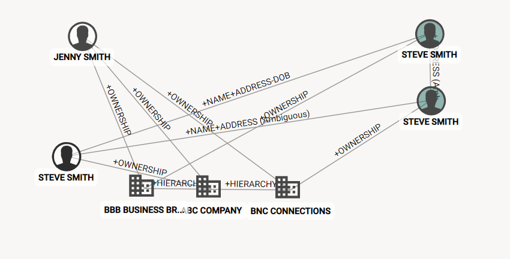

The SzRelationshipNetworkComponent creates a graphical representation of an entity and it's relationships to other entities.

see sdk-graph-components documentation for the full list of component methods and properties: http://certified.senzing.com/sdk-graph-components/components/SzRelationshipNetworkComponent.html
<sz-relationship-network
svgWidth=2000
svgHeight=1000
port=2080
entityIds="1001"
maxDegrees=3
buildOut=2
maxEntities=1000></sz-relationship-network> <sz-wc-relationship-network-graph
entity-ids="1,1001,1002"
svg-view-box="150 50 400 300"
svg-preserve-aspect-ratio="xMinYMid meet"
max-degrees="2"
build-out="5"
show-link-labels="true"
></sz-wc-relationship-network-graph>The SzRelationshipNetworkComponent is not native to the SDK Components package, but is re-exported and included for convenience. The sdk-components-ng and sdk-components-web npm packages both re-export the graph components network relationship component. Due to tag namespace collision issues all web components are prefixed with sz-wc.
If using the sdk-components-ng package the tag is called sz-relationship-network.
If using the sdk-components-web package the tag is prefixed with sz-wc-relationship-network.